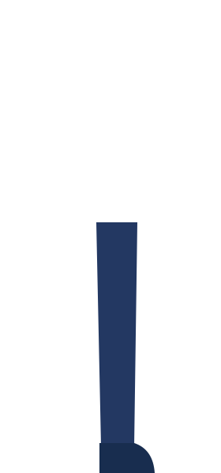
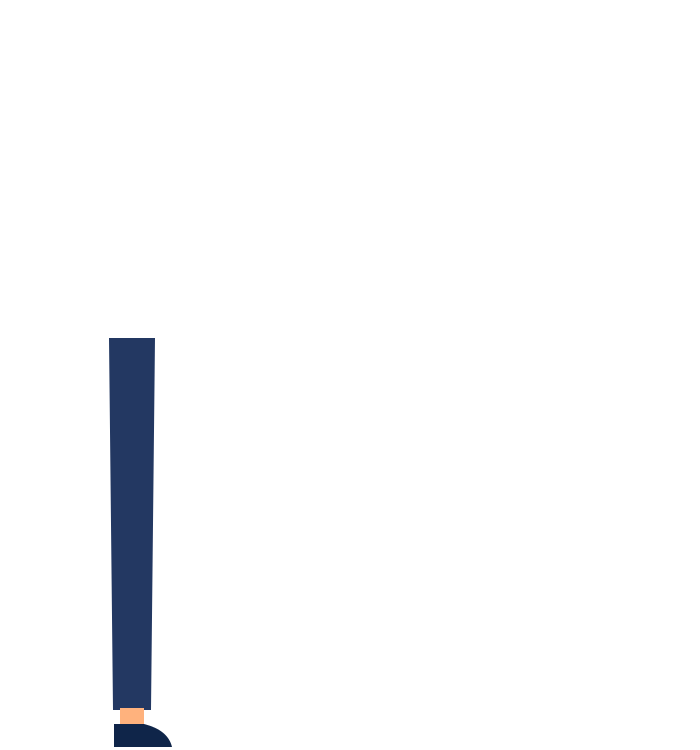
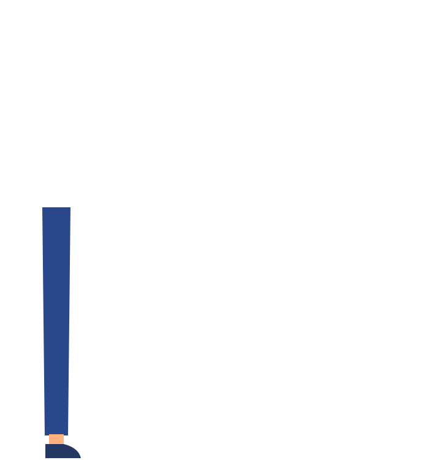
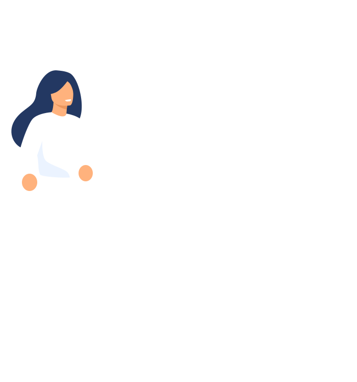
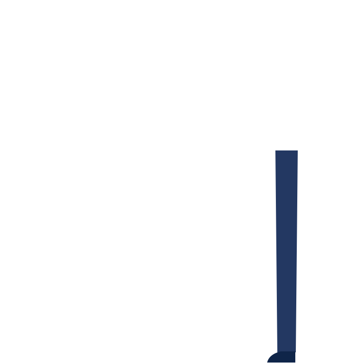
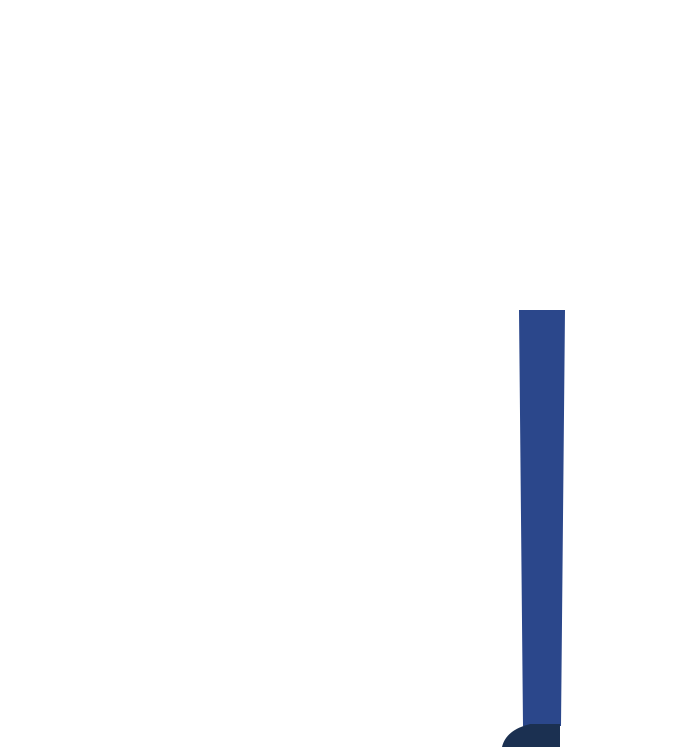
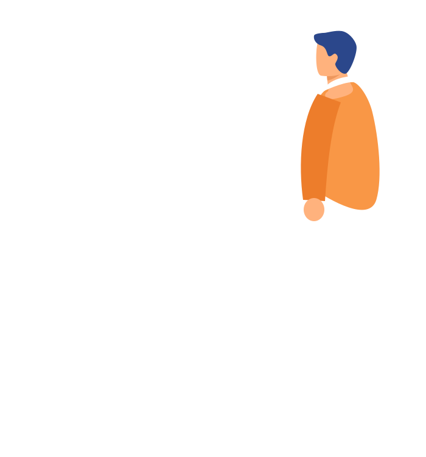
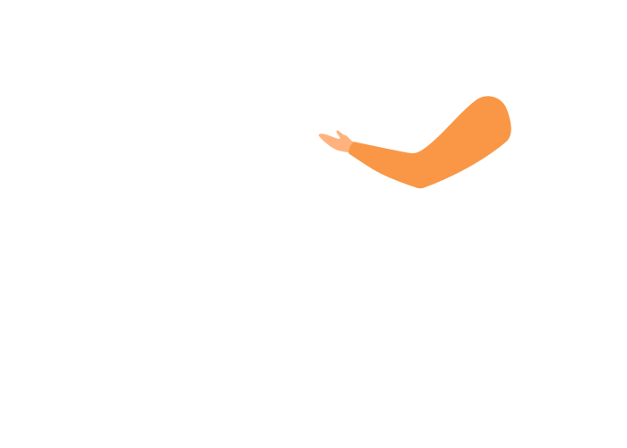

Without tapndine
0 min1 min3 min4 min6 min7 min8 min10 min12 min13 min



















Excuse me!
Call me when you’re
ready to order.
ready to order.
Is this spicy?
How big is it?
How big is it?
Quite spicy. Good
for two to three.
for two to three.
And the Kare-Kare?
Looking for a waiterHere’s the menuCalling the waiterAsking about a dishBack and forthStill taking the orderOrders sent to kitchenWaiting, with nothingStill waiting
With tapndine
0 min1 min3 min4 min6 min7 min8 min10 min12 min13 min

Pork Sisig
Spicy
Feeds 2–3
₱320
+ AddAdded
Kare-Kare
Not spicy
Feeds 2–4
₱495
+ AddAdded

Chicken Inasal
Not spicy
Feeds 1
₱245
+ AddAdded
Order
123
Send
+ Mango Shake · ₱135
Sisig, Kare-Kare
and Inasal?
and Inasal?
Yes!
Tap, pick, sendThe waiter reads it backSent to the kitchenThe kitchen is cookingBrowsing for moreFood’s hereEatingAdding a second roundAlready eating
No more waitingat the table.